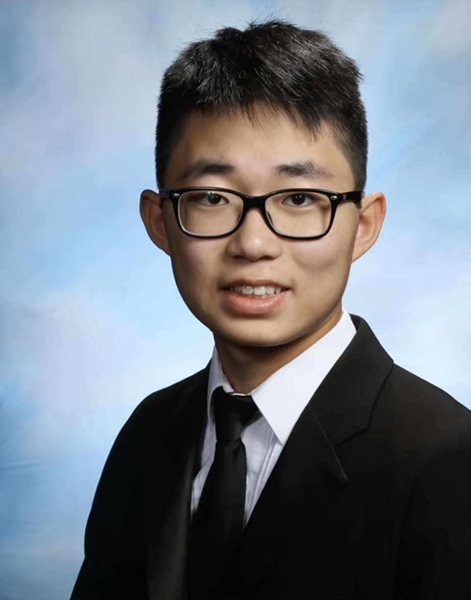

你好！我叫郑子豪,
一位来自罗格斯的CS学生！
我是Rutgers大学的在校生，正在攻读计算机科学学士学位，计划于2024年5月毕业。我在计算机科学领域主要感兴趣的方向是人工智能、机器学习和游戏开发。作为一个高度积极进取的学生，我已经连续三个学期荣获教务长名单的荣誉，这表明我在学业上表现出色。 作为一名学生，我热衷于学习新知识并将其应用于实际项目中。我熟练掌握多种编程语言，包括Java、Python和C++等，并且熟悉各种开发工具和框架，例如Eclipse和Visual Studio。我渴望深入了解人工智能和机器学习，并将我的知识应用于实际场景。未来，我希望通过运用我的技能和知识为这些领域的发展做出贡献。未来，我希望继续深入学习人工智能、机器学习和软件工程等领域的知识，以期将其应用于实际项目中并做出更大的贡献。我相信在未来的工作中，我能够充分发挥自己的优势，创造出高效、创新、安全的软件解决方案，为人类社会的发展做出贡献。我深信计算机科学的未来将会越来越重要，因为它涉及到现代社会中的许多方面，包括医疗保健、金融、教育和娱乐等。